Explore Cardiff
A Brief History
Cardiff grew from a Roman fort and medieval castle into the coal-export port of the South Wales coalfield. The Marquesses of Bute funded docks, civic buildings, and castellated revival architecture before industry declined in the 20th century. Devolution made Cardiff the capital of Wales in 1955 with a new senate quarter at Cardiff Bay. Municipal archives, parish records, and surviving architecture help explain how the city connected to wider regional trade routes, court patronage, and modern civic rebuilding after industrial and wartime change.
Attractions Map
Top Sights & Activities
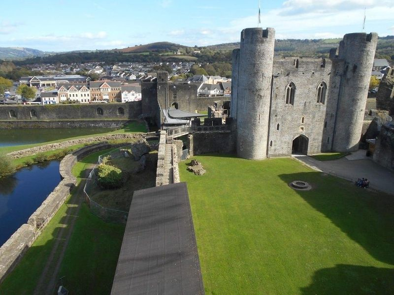
Caerphilly Castle
Nestled in the heart of the town, Caerphilly Castle is a moated 13th-century fortress that showcases Norman might and military architecture. The castle's sheer size and imposing gatehouse make it an impressive sight. With its meticulously restored structures, including a tower bombed by Cromwell, visitors can get a sense of medieval life through huge wooden replica siege engines and intricate moats.
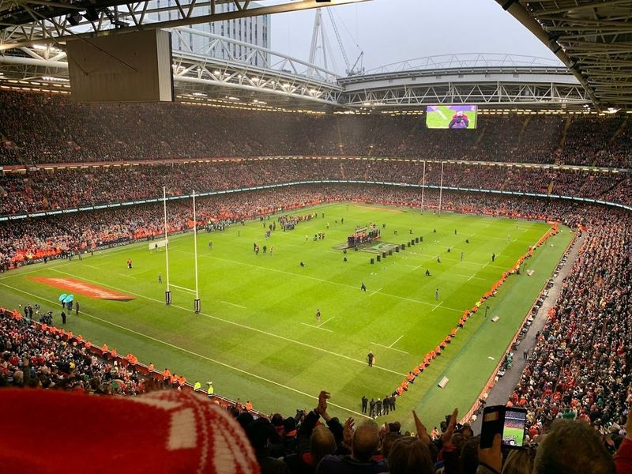
Principality Stadium
In the heart of Cardiff, experience a mix of culture, history, and sports. Start your day with a visit to the Millennium Centre for an opera performance or explore the Edwardian arcades for some shopping. Indulge in craft brews at The Potted Pig before heading to Principality Stadium to cheer on the rugby team. Don't miss out on free access to impressive Impressionist paintings at the National Museum.
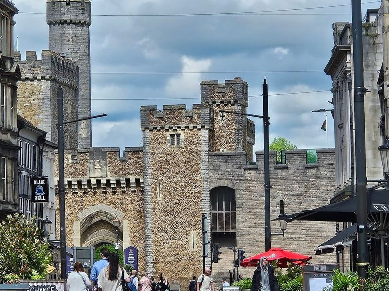
Escape Rooms Cardiff
If you're seeking an exhilarating adventure in Cardiff, look no further than Escape Rooms Cardiff. Nestled conveniently on St Mary Street, this venue invites you to gather your friends or family—up to six players per room—to embark on a thrilling quest filled with puzzles and challenges. With six uniquely themed rooms to choose from, each experience promises immersive storytelling and intricate designs that transport you into another world.
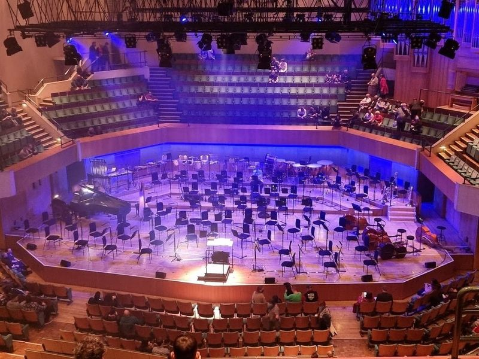
St David's Hall
St David's Hall, located in the heart of Cardiff, is a modern concert hall with a seating capacity of 2,000. It hosts a variety of performances including ballet, orchestral concerts, mainstream music events and theatrical productions. The venue is renowned for its architectural design and serves as one of the leading centers for musical excellence in Wales. Throughout the year, it presents major music festivals such as the Welsh Proms and the Singer of the World competition.
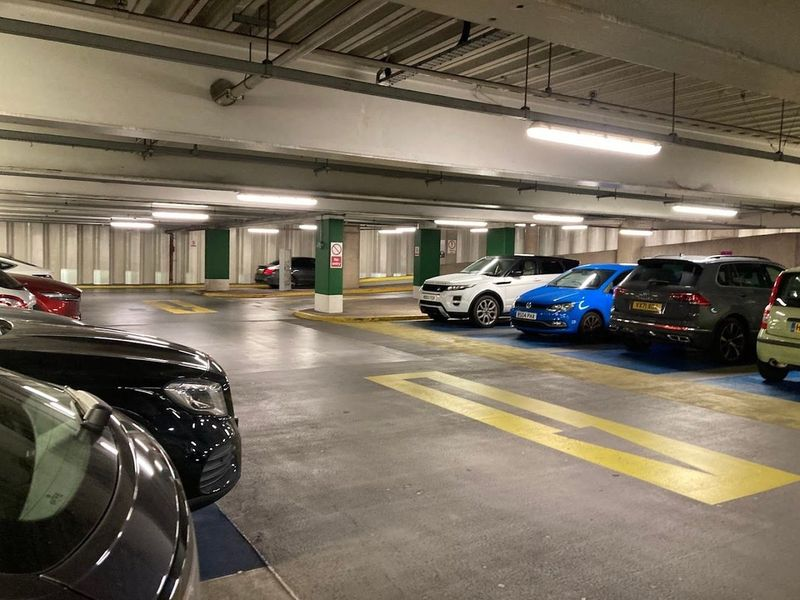
St David's Dewi Sant
St David's Dewi Sant is Cardiff's main city-centre shopping mall, opened in 2009 and linked to John Lewis and the Hayes pedestrian quarter. Its glass atrium and multi-level retail units replaced earlier arcades around The Friary. The complex stands a short walk from Cardiff Castle and the Principality Stadium, anchoring the capital's central shopping district.
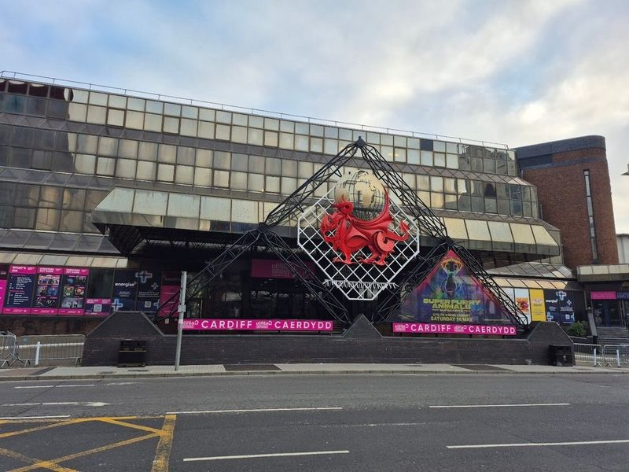
Utilita Arena Cardiff
Utilita Arena Cardiff is a versatile indoor events arena that hosts a wide range of entertainment, including live music concerts by renowned artists like Kylie Minogue and local favorites such as the Manic Street Preachers. The venue also features theatre productions, ice shows, stand-up comedy, sports events, banquets, conferences and exhibitions. With a capacity of 7500 people, it is the second largest music venue in Cardiff.
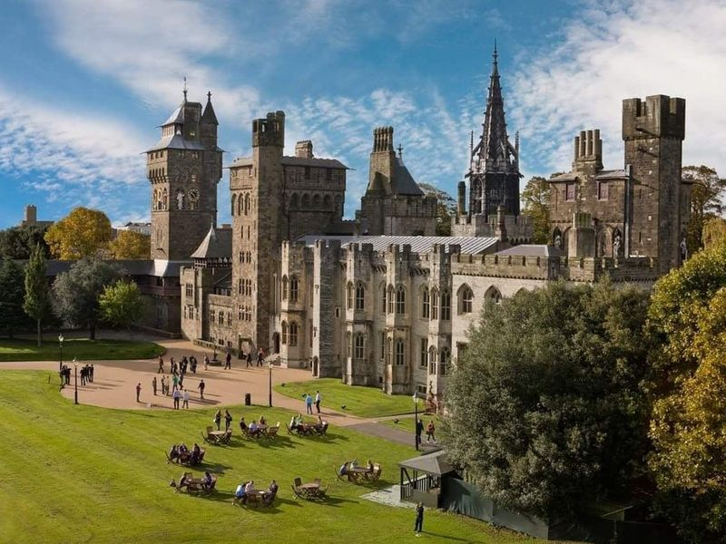
Cardiff Castle
Cardiff Castle, located in the heart of the city, is a captivating blend of Victorian Gothic architecture and ancient history. Built on the remnants of Norman and Roman ruins, this popular tourist attraction offers visitors a glimpse into its two millennia of history. The castle features a magnificent 12th-century keep and opulent 19th-century Gothic Revival interiors designed by renowned architect William Burges.
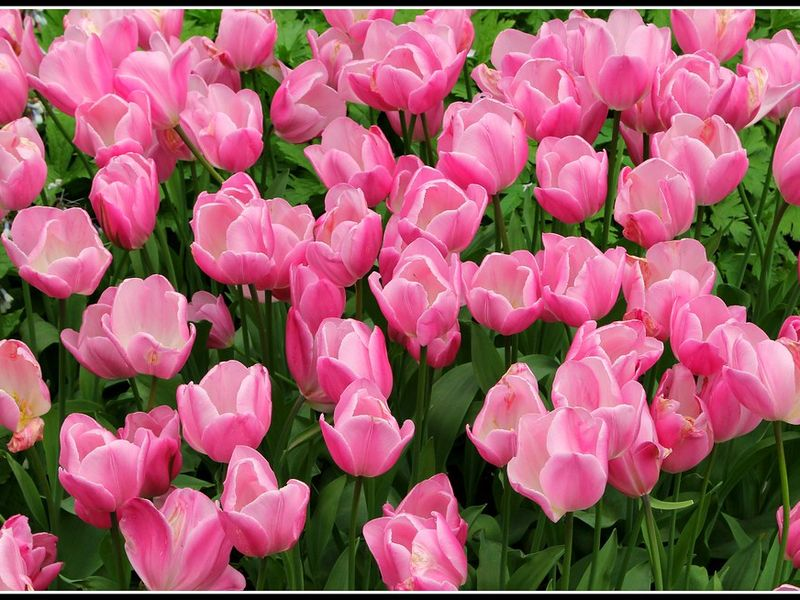
Sophia Gardens
A beautiful park known for its lush greenery, cricket ground, and peaceful walking paths. The site forms part of Sophia Gardens's documented civic and cultural landscape within Cardiff, with archives and visitor information available from municipal or regional heritage authorities.
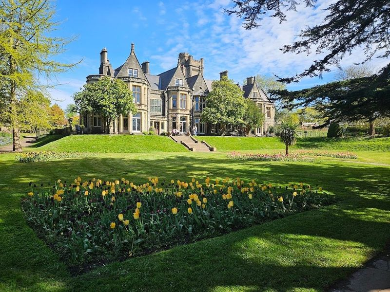
Insole Court
Insole Court, a hidden gem in Cardiff, is a beautifully restored nineteenth-century mansion surrounded by picturesque grounds. It's conveniently located near Llandaf village and offers various activities for visitors of all ages. The estate hosts events like baby yoga and music sessions, making it an ideal destination for families. While entrance to the house's ground floor is free, there's an option to take an audio tour of the first floor for a small fee.
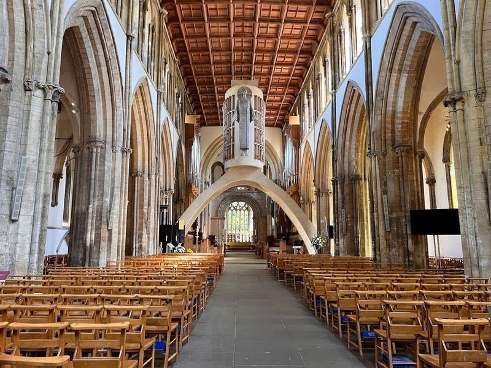
Llandaff Cathedral
Llandaff Cathedral, located in Cardiff, is a medieval place of worship with a rich history dating back to the 10th century. The cathedral features a 10th-century Celtic cross and a triptych painted by D.G. Rossetti. Built in the 1300s on the ruins of an earlier structure, it boasts an impressive 15th-century tower and an exquisite fully-restored 18th-century Italian temple with rare religious sculptures and artifacts.
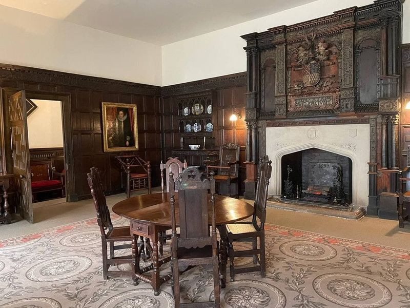
St Fagans Castle
St Fagans Castle, located in Penarth, Wales, is a charming Elizabethan manor house surrounded by beautiful gardens featuring fish ponds, fountains, and a serene rose garden. The castle is part of the St Fagans national museum grounds and offers a glimpse into the lifestyle of its previous residents. Although only two rooms are open to visitors, they exude a rich period atmosphere.
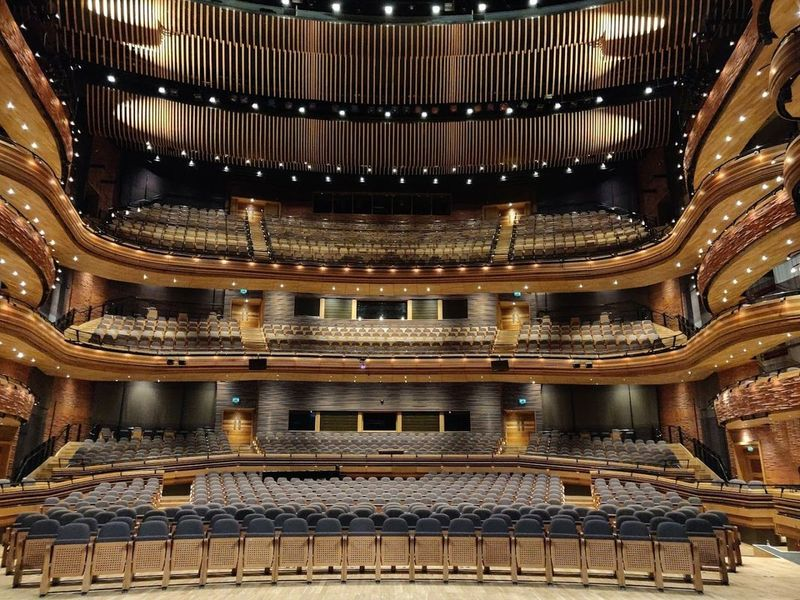
Wales Millennium Centre
The Wales Millennium Centre in Cardiff is a leading cultural venue that hosts a diverse range of performances including theatre, opera, ballet, and music shows. It is renowned for its modern facilities and expansive 5-acre grounds. Visitors can enjoy not only the captivating performances but also participate in workshops, educational events, guided tours, and dining/shopping activities.
The Red Dragon Centre Cardiff
Located in Cardiff Bay, The Red Dragon Centre is a vibrant leisure and entertainment complex offering a variety of attractions. Visitors can enjoy an international food court with diverse cuisine options, a 4D cinema, bowling alley, casino, health club, and amusement arcades. The center also features an ice-cream parlour and numerous restaurants. It's a popular destination for families with activities to keep everyone entertained from early morning until late at night.
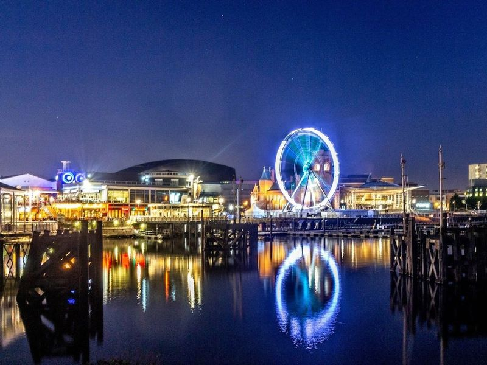
Cardiff Bay
Cardiff Bay is a celebrated urban area with a marina, shops, eateries, and historic buildings. It features the Millennium Stadium and Cardiff Arms Park for sports enthusiasts, as well as the interactive Doctor Who Experience at BBC Roath Lock Studios. The dining scene offers easy-going yet superior Welsh ingredients at various restaurants.